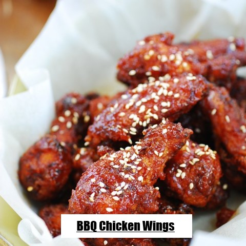

×
Info! Recipe details are directly from our kitchen or from our Moms' recipe notes.
Cooking videos provided here are from internet. That's why, they can vary a little bit.
We apologize! You can try any of them or customize your dish in your own way. Good luck!!

About
Chocolate pizza combines chocolate and pizza, two popular ingredients among school-aged children. The confluence of pizza and chocolate developed in parallel in several Western countries and has become a dessert purveyed in franchise and chain restaurants. Chocolate pizza is also known as a Valentine's Day,Easter and Christmas holiday treatIngredients
For pizza toppings
- 2 teaspoons butter, melted
- 2 tablespoons cocoa powder
- 1/4 cup chocolate-hazelnut spread (recommended: Nutella)/melted Dark chocolate
- 1/2 cup semisweet chocolate chips
- 4 tablespoons white chocolate chips
- 2 tablespoons chopped hazelnuts, toasted
For pizza Dough
- 3/4 cup all purpose flour
- 2 spoon yeast
- Salt on taste
- 2 spoon oil
Direction
Processing of Pizza Dough
Related Video
Step 2:Mix the flour and salt in another bowl , add the yeast mixture and also oil. Blend just until the dough forms. Turn the dough out onto lightly floured surface and knead until smooth, about 1 minute. Transfer the dough to a large oiled bowl and turn the dough to coat with the oil. Cover the bowl with plastic wrap and set aside in a warm draft-free area until the dough doubles in volume, about 1 hour
Step 3:Punch the down dough and form into ball. The dough can be used immediately or stored airtight in the refrigerator for 1 day.
Processing of Final Pizza
Step 2:Immediately spread the chocolate-hazelnut spread over the pizza then sprinkle all the chocolate chips over. Bake just 20 minutes about 200-220C to melt the chocolate and crisp the dough.Then sprinkle the hazelnut ,cut into wedges and serve.

About
Pizza is a savory dish of Italian origin consisting of a usually round, flattened base of leavened wheat-based dough topped with tomatoes, cheese, and often various other ingredients (such as anchovies, mushrooms, onions, olives, pineapple, meat, etc.) which is then baked at a high temperature, traditionally in a wood-fired oven.A small pizza is sometimes called a pizzettaIngredients
For pizza toppings
- 200gm chicken
- 2 spoon lemon juice
- 1 spoon red chili powder
- 1 spoon black pepper
- sliced 6/7 pieces of mushroom
- 1spoon Garam masala
- 1spoon sugar
- salt on taste
- 4 spoon bbq sauce
- 3/4 spoon pizza sauce
- 1/2 cup of cheese
- 1/4 cup green/red capsicum
- 1spoon sweet corn
- 1spoon oregano
- About 1 pound of dough(the dough recipe is attached previous recipe without using cocoa powder)
Direction
Processing of Pizza Toppings
Related Video
Processing of Final Pizza
Step 2:Spread the pizza sauce over the pizza and sprinkle with capsicum and place your desired toppings on the pizza.And at last add the load of cheese how much you want and also sprinkle some oregano
Step 3:With zigzag design pour the bbq sauce on the top of pizza.Then bake just 20 minutes about 200-220C to crisp the dough and melt the cheese. Cut into wedges and serve.

About
A bun is a small, sometimes sweet, bread, or bread roll. Though they come in many shapes and sizes, they are most commonly hand-sized or smaller, with a round top and flat bottom.Tap here to see the list of bunsIngredients
- 2 Cup all purpose flour
- 1 cup milk
- 1.5 spoon yeast
- 2 Spoon sugar
- 1 Egg
- 3 spoon butter/oil
- 1 spoon whitw sesame
- salt on taste
Direction
Related Video
Step 2:Then in a bowl take the flour,yeast mixture,salt ,oil/butter and the egg.Knead the mixture about to 10 minutes . Transfer the dough to a large oiled bowl and turn the dough to coat with the oil. Cover the bowl with plastic wrap and set aside in a warm draft-free area until the dough doubles in volume, about 1 hour
Step 3:.After 2x volume divided the dough into 4 small pieces and shape them round .And keep this rounded dough on top of the oil brushed tray.Keep it aside covering a towal about to 40 minutes
Step 4:.Then brush the egg/milk on top of the every dough and sprinkle white sesame .Bake them 20 minutes within 200-220C.

About
A hamburger (also burger for short) is a sandwich consisting of one or more cooked patties of ground meat, usually beef, placed inside a sliced bread roll or bun. The patty may be pan fried, grilled, smoked or flame broiled. Hamburgers are often served with cheese, lettuce, tomato, onion, pickles, bacon, or chiles; condiments such as ketchup, mustard, mayonnaise, relish, or a "special sauce", often a variation of Thousand Island dressing; and are frequently placed on sesame seed buns. A hamburger topped with cheese is called a cheeseburger.Ingredients
- 1/4 pounds ground beef chuck/500 gm minched chicken
- freshly ground pepper
- Oil, for grill grate and brushing buns, optional
- 4 sesame seed buns, split
- 4 lettuce
- 4 slices of cedder cheese
- 4 tomato slices
- 4 red onion slices
- Mustard, for serving
- Pickles, for serving
Direction
Related Video
Step 2: Break the beef/chicken up in a large bowl and season with 1/2 teaspoons salt and 3/4 teaspoon pepper. Gently mix just to combine, then form into 4 (4 1/2-inch) patties, making a slight indentation in the center of each patty.
Step 3:Brush the grill grate with oil. Evenly space the burgers on the grill and cook, turning once, until grill marks appear, 4 to 6 minutes total for medium. (Resist the urge to press down on the burger with a spatula as they cook.) Remove burgers from grill and let rest 1 to 2 minutes.
Step 4:. Brush cut side of buns lightly with oil and grill cut-side down until light golden brown, if desired. Put a burger on the bottom of each bun and top with lettuce, tomato, onion, ketchup, mustard, pickles and bun top.And also with a slice of cedder cheese

Ingredients
- 1kg fatty minced beef
- 1 onion, grated
- 4 sprigs of thyme, finely chopped
- 1/2 cup parsley, finely chopped
- 1 egg, lightly beaten
- 1/2 cup fresh bread crumbs
- 2 tablespoons tomato sauce
- 1 tablespoons Worcestershire sauce
- Salt and pepper
- 6 baby lettuce leaves
- 1 tomato
- 6 slices good quality cheddar
- 5 tbsp whole egg mayonnaise
- 5 tbsp tomato sauce
- 6 rashers of Hala beef bacon (optional), fried
- 6 Burger Buns
Direction
Step 1:Combine the beef with the grated onion, herbs, egg, bread crumbs, tomato sauce and Wostorshire. Season well with salt and pepper. Mix well with your hands and knead until thoroughly combined. Separate the meat into six and roll into balls.
Step 2:To cook, heat the pan (or barbeque) to medium heat. Add a little oil and add the meat. Using a fish slice press down on each patty to flatten. Cook on each side for 3-5 minutes or longer if you would like them well done.
Step 3:To assemble the burgers: toast the buns under the grill with a slice of the cheese. Add a dollop of the mayonnaise and tomato relish and the burger patty. Add the lettuce, beetroot and tomato slices and finally the fried bacon if you desire.
Step 2:To cook, heat the pan (or barbeque) to medium heat. Add a little oil and add the meat. Using a fish slice press down on each patty to flatten. Cook on each side for 3-5 minutes or longer if you would like them well done.
Step 3:To assemble the burgers: toast the buns under the grill with a slice of the cheese. Add a dollop of the mayonnaise and tomato relish and the burger patty. Add the lettuce, beetroot and tomato slices and finally the fried bacon if you desire.

About
Pasta is the Italian designation or name given to a type of starchy noodle or dumpling food or dish typically made from grain flour, commonly wheat, mixed into a paste or dough, usually with water or eggs, and formed or cut into sheets or other shapes.And this raw pasta is cooked by many process where white sauce pasta is more popular worldwide.It is usually made by cream,cheess and some sorts of vegetables.Tap here to see the different shapes of pastas.
{kind=link}
Ingredients
- 150 grams Dried Pasta Macaroni /Penne /Fusilli / Orecchiette / Rigatoni
- 2 tablespoon Salt
- 5 cups Water
- 2 tablespoon Butter
- 4-5 cloves Garlic minced
- 1 cup Onion diced
- 6-7 Mushrooms halved
- 1 cup capsicum cubed (colored)
- 1 teaspoon Salt
- 1 teaspoon Pepper powder
- 1 teaspoon oregano
- 2 tablespoons All Purpose Flour
- 2 cupMilk
- 1/2 cup Cream
- 1 cup Mozzarella grated
- 2 tablespoon Basil shredded
Direction
Related Video
Step 2:In another pan, add olive oil and butter and heat till the butter has melted. Add minced garlic and onions, cook for a minute or two till the onions are translucent. Add mushrooms and the peppers. Season with salt, pepper and oregano and cook for 3-4 minutes, stirring occasionally.
Step 3:Add flour and cook stirring for a minute or two. Slowly start adding milk while stirring continuously till the sauce starts to thicken. Simmer for two minutes and add cream. Mix the cream and add the drained cooked pasta and cheese.
Step 4:Fresh basil (if using) and stir to mix everything together. Serve immediately.
Ingredients
- 5-6 whole peeled tomatoes
- 2 tablespoons extra-virgin olive oil/normal oil
- 1/3 cup red onion, medium-diced
- 3 cloves garlic, cut into chunks
- Pinch of red pepper flakes (optional)
- salt and freshly ground pepper
- 2 tablespoons oregano/basil leaves
- 150 gm penne or spaghetti, cooked until al dente
Direction
Related Video
Step 2:Heat the olive oil/normal oil over medium-high heat in a large saucepan. When hot, add the onion and saute 5 to 6 minutes, or until soft. Add the garlic and cook 2 to 3 minutes, until you see the color start changing. If you&aposd like to make the sauce spicy, add the red pepper flakes.
Step 3:Add the tomatoes and season with salt and pepper to taste. Reduce the heat to medium low and simmer about 30 minutes. Strive for balance in the consistency of the sauce: It has to be fluid, but it should not look overly wet. Add the oregano and remove from the heat. Toss with just-cooked pasta.
About
Shawarma is a dish in Middle Eastern cuisine consisting of meat cut into thin slices, stacked in a cone-like shape, and roasted on a slowly-turning vertical rotisserie or spit. Originally made of lamb or mutton, today&aposs shawarma may also be chicken, turkey, beef, or veal.Ingredients
For Shawrma Wrapper
- 4 cup of all purpose Flour
- 2 teaspoon yeast
- 2 teaspoon oil/melted butter
- 2 teaspoon sugar
- Salt on taste
- 1cup warm water
For Fillings
- 1/2 cup extra-virgin olive oil
- Juice of 1 lemon
- 3 cloves garlic, minced
- 2 tablespoon kosher salt
- 1 tablespoon ground coriander
- 1/2 tablespoon freshly ground black pepper
- 1/2 tablespoon ground turmeric
- 1/4 tablespoon ground cinnamon
- 2 lb. boneless skinless chicken thighs
- 1 large onion, thinly sliced
For Yogurt Sauce
- 1/2 cup Greek yogurt
- Juice of 1/2 lemon
- 1 tablespoon. extra-virgin olive oil
- 2 cloves garlic, smashed and minced
- Salt on taste
- Pinch of crushed red pepper flakes
Direction
Processing of shawrma wrapper
Step 2:After the rest, divide the dough into balls about 35 grams each.
Step 3:Dip a ball of dough into the flour, place it on the rolling surface, and press to flatten it. Roll with short strokes and keep rotating the disk this is the key to a rounded wrap.
Step 4:Each one cook in a preheated hot tawa
Related Video
Processing of Fillings and Shawrma
Step 2:2. Then fry in a grill pan with a small amount of oil .
Step 3:3. Meanwhile, make yogurt sauce: In a small bowl, whisk together yogurt, lemon juice, oil, and garlic. Season with salt and a pinch of red pepper flakes. Shawrma wrappings wrap with chicken, onion, romaine, tomatoes, cucumber, and yogurt sauce.
About
A sandwich is a food typically consisting of vegetables, sliced cheese or meat, placed on or between slices of bread, or more generally any dish wherein bread serves as a container or wrapper for another food type. The sandwich began as a portable finger food in the Western world, though over time it has become prevalent worldwide.Sandwiches are a popular type of lunch food, taken to work, school, or picnics to be eaten as part of a packed lunch. The bread may be plain or be coated with condiments, such as mayonnaise or mustard, to enhance its flavour and texture. As well as being homemade, sandwiches are also widely sold in restaurants and can be served hot or cold.There are both savoury sandwiches, such as deli meat sandwiches, and sweet sandwiches, such as a peanut butter and jelly sandwich.
The sandwich is named after its supposed inventor, John Montagu, 4th Earl of Sandwich.The Wall Street Journal has described it as Britain&apos,s "biggest contribution to gastronomy."
Ingredients
- 1 Cup chicken, boiled
- 2 tsp mayonnaise
- 1 tsp pepper
- 2 nos bread
- 1 Capsicum & 1 lettuce(optional)
Direction
Related Video
Step 2:Take a slice of bread and spread the mixture on it. Now chop capsicum and lettuce into small pieces. Put them on the slice. Put another slice on top of it and cut them into two. Serve with tomato ketchup or coriander chutney
About
Nachos are a Mexican dish from northern Mexico that consists of heated tortilla chips or totopos covered with melted cheese (or a cheese-based sauce), often served as a snack or appetizer.More elaborate versions of the dish include other ingredients, and may be substantial enough to serve as a main dish. Ignacio "El Nacho" Anaya is credited for creating the dish in 1943; the original nachos consisted of fried corn tortilla chips covered with melted cheese and sliced jalapeño peppers.
Ingredients
For Nachos
- 1 tablespoon extra-virgin olive oil
- 1 large onion, chopped
- 1 lb. ground beef/chicken
- 2 garlic cloves, minced
- 1 tablespoon taco seasoning
- kosher salt
- 1 large bag of homemade tortilla chips
- 1/4 cup water
- 2 cup shredded cheddar
- 2 cup Shredded Mozerella
- 1/2 c. pickled jalapenos
- 1 large tomato, diced
- 1/4 cup thinly sliced green onions
- 1/4 cup fresh coriander leaves (optional)
- Sour cream, for drizzling
- Tomato sauce, for drizzling
For Homemade Tortilla Chips
- 1 cup maize flour / makkai ka atta)
- 1/2 cup wheat flour / atta
- 1/4 tablespoon turmeric
- 1/2 tablespoon pepper, crushed
- 1/2 tablespoon salt
- 2 tsp oil
- water to knead
- oil for frying
Direction
Processing of Homemade Tortilla Chips
Related Video
Step 2: Pinch a ball sized dough, and dust with wheat flour. Roll slightly thick, dusting wheat flour as required. Prick the roll with a fork, preventing from puffing up while frying. Trim the sides and cut into triangle pieces. Now drop the triangle chips into the medium hot oil. or bake in preheated oven at 180 degree celcius for 25 minutes.
Step 3:Fry on low to medium flame stirring in between. Fry on low flame until the nachos chips turn crisp and golden brown for 10 minutes. Drain off the chips over kitchen paper. Finally, enjoy nachos chips with roasted tomato salsa or store it for a month in an airtight container.
Processing of Nachos
Step 2:Add garlic and taco seasoning and season with salt. Cook until meat is well browned and slightly crispy, 5 minutes more. Add refried beans and water to skillet and stir until combined.
Step 3:3. Add half the tortilla chips and top with beef-bean mixture, half the cheese, half the black beans, and half the pickled jalapeños. Repeat one more layer.
Step 4:4. Bake 150C until cheese is melty, 15 minutes. Scatter with tomato, avocado, green onions, and cilantro. Drizzle with sour cream and hot sauce and serve immediately.

Ingredients
For 20 wings
- 1 cup flour
- 2 spoon corn starch /corn flour
- 1 spoon red chili powder
- 1 spoon paprika powder
- 1 spoon black pepper
- 1 teaspoon garlic paste
- 1 teaspoon ginger paste
- Salt on taste
- 1cup BBQ sauce
- 1/2 cup honey
- 2 spoon chili sauce
- 1 teaspoon white sesame
- Oil for fry
- 20 chicken wings/drumstick
Direction
Related Video
Step 2:In a bowl, combine flour, chili powder, salt, pepper, paprika, and black pepper. Coat the wings in the flour evenly, shaking off any excess. Then in fry pan try to fry the wings with deep oil.
Step 3:In another pan mix the bbq sauce ,honey and chili sauce.And warm up it for 2-3 minutes.Then coat the wings with this sauce and lastly serve them by sprinkling white sesame.
About
Southern fried chicken, also known simply as fried chicken, is a dish consisting of chicken pieces which have been coated in a seasoned batter and pan-fried, deep fried, or pressure fried. The breading adds a crisp coating or crust to the exterior of the chicken while retaining juices in the meat. Broiler chickens are most commonly used.The first dish known to have been deep fried was fritters, which were popular in the European Middle Ages. However, it was the Scottish who were the first Europeans to deep fry their chicken in fat (though without seasoning). Scottish frying techniques were later combined with West African seasoning techniques by the Scottish diaspora and African-Americans in the American South.
Ingredients
For 8 pieces of Chicken
- 1 kg chicken(cut into 8 pieces)
- 1 table spoon garlic paste
- 1 table spoon ginger paste
- 1 spoon paprika powder
- 1spoon black pepper
- 1 spoon red chili powder
- Salt on taste
- 3.5 cup all purpose flour
- 1/2 cup corn flour
- 1cup milk
- 2 spoon lemon juice/vinegar
- 1 Egg
Direction
Related Video
Step 2:In another bowl take flour, corn flour , chilli powder ,black pepper ,salt and mix them thoroughly.
Step 3:Alongside mix raw milk and lemon juice/vinegar to make butter milk .After making butter milk mix an egg with this.
Step 4:Press the each piece of chicken into the flour mixture then into the butter milk mixture. Repeat this process two times. Lastly coat with the flour mixture again. And keep them aside for at least 10 minutes.
Step 5:Heat oil in a heavy bottom deep pan /kadai . Fry till golden at medium high temperature.
About
French fries, or simply fries , finger chips, or French-fried potatoes, are batonnet or allumette-cut deep-fried potatoes.French fries are served hot, either soft or crispy, and are generally eaten as part of lunch or dinner or by themselves as a snack, and they commonly appear on the menus of dinners, fast food restaurants and bars. They are usually salted and, depending on the country, may be served with ketchup, vinegar, mayonnaise, tomato sauce, or other local specialties. Fries can be topped more heavily, as in the dishes of poutine or chili cheese fries. Chips can be made from Sweet potato instead of potatoes. A baked variant, oven chips, uses less oil or no oil.
Ingredients
- 5 pounds of Russet Potato
- Vegetable pr peanut oil for frying
- Salt
Direction
Related Video
Step 2: When you're ready to make the fries, drain off the water and lay the potatoes on 2 baking sheets lined with paper towels. Blot with paper towels to dry them. Heat a few inches of oil in a heavy pot to 300 degrees F. In 3 or 4 batches, cook the potatoes until soft, 4 to 5 minutes per batch. They should not be brown at this point! You just want to start the cooking process. Remove each batch and drain on new/dry paper towels
Step 3:Once all the potatoes have been fried at 300 degrees F, turn up the heat until the oil reaches 400 degrees F. When the oil's hot, start frying the potatoes in batches again, cooking until the fries are golden and crisp. Remove the potatoes from the oil and drain on paper towels. Sprinkle with sea salt and dive in!
About
Potato wedges are wedges of potatoes, often large and unpeeled, that are either baked or fried.They are sold at diners and fast food restaurants. In Australia, potato wedges are a common bar food, that are almost always served with sour cream and sweet chilli sauce. They are not considered French fries. One may also use ketchup, ranch, and honey mustard. They are usually seasoned with a variety of spices, commonly paprika, salt and pepper.<
Ingredients
For 3 servings
- 3 large russet potatoes
- ⅓ cup olive oil(80 mL)
- 1 teaspoon salt
- 1/2 teaspoon pepper
- 1 tablespoon garlic powder
- 1 tablespoon dried oregano
- 1 tablespoon paprika
- 1/2 cup vegetarian parmesan cheese(55 g)
Direction
Related Video
Step 2:Toss wedges in olive oil and seasonings. Place on a baking sheet, skin side down.
Step 3:Bake 40-50 minutes. Enjoy!
About
Momo is a type of East and South Asian steamed filled dumpling, popular across the Indian subcontinent and the Himalayan regions of East-South Asia border. Momos are native to Southwest Chinese region of Tibet, Bhutan, Nepal, North Indian region of Ladakh, Northeast Indian regions of Sikkim, Assam, and Arunachal Pradesh, and East Indian region of Darjeeling.It is similar to Chinese baozi, jiaozi, and mantou, Mongolian buuz, Japanese gyoza, Korean mandu and Turkic manti, but heavily influenced by cuisine of the Indian subcontinent with Indian spices and herbs. Momos are extremely popular among the natives of the Indian subcontinent, and can be found in every kind of shop from restaurants to street vendors.
Ingredients
- 200g ground chicken
- 1 medium onion
- 1 green chili pepper
- 1tablespoon garlic paste
- 1 table spoon soya sauce
- 3 table spoon butter
- Salt on taste
- 1 table spoon fresh coriander
- Whole wheat powder
- All purpose flour
- Water
- Spicy garlic tomato cutney
Direction
Related Video
Step 2:Allow it to set for 15-20 minutes. Add Whole Wheat Flour (1 cup), All-Purpose Flour (1 cup) and Salt (1 tablespoon) together.
Step 3:With the help of Water (to taste) knead it into a not too soft not hard dough.
About
Panipuri or Gupchup or Phuchk is a type of snack that originated in the Indian subcontinent.It consists of a round or ball-shaped, hollow puri (a deep-fried crisp crepe), filled with a mixture of flavored water (known as Tok jol), tamarind chutney, chili, chaat masala, potato, onion or chickpeas.It is genuinely the most delicious munching treat to your mouth . The taste is so crunchy stuffed juicy and flavorsome which makes you eat puchkas one after the other.
Ingredients
For Fuchka Papri
- 200g rice flour
- 100g Suji (semolina)
- 170g Water
- Vegetable oil for deep frying
For Filling
- 300g Boiled potatoes
- Salt on taste
- 1 tsp Chaat masala
- 1/2 tsp Coriander powder
- 2 tablespoon Crushed green chillies
- 2 tablespoonCoriander leaves
- 50g of Phuchka Water
- 10g soaked chhola
- Onion chopped(optional)
Direction
Processoing of Papri
Step 1:In a large bowl mix together 200 grams of rice flour, 100 grams of semolina.
Add 150–170 grams of room temperature water. The exact amount depends on several factors including how dry or humid the weather is. Start with 150 grams and add more if necessary.
This is a stiff dough. So kneading it is going to be quite the workout. Knead continuously for five minutes. We find it helpful to set a timer instead of looking at the clock or guessing. Wrap in a plastic wrap or place in an airtight bowl and rest for one hour.
Step 2:After an hour divide the dough into quarters. While you work on one quarter, place the rest back in the bowl or wrap to prevent them from drying out. Roll the dough into a thin log. Cut into small portions—7 grams each if you like a big papri and 5 grams if you want a small one. Roll each tiny ball of dough between your palms until they are round and have a smooth outer surface. This step is important. If there are cracks on the surface now, your papris may not puff up after you roll them out and fry them.
Step 3: Roll them out one by one into discs of uniform thickness—about 7 centimetre in diameter when using a 7 gram portion of dough. You should not need to use any extra flour for dusting. Uniform rolling is important for a good success rate. As you roll the papris, leave them out to dry for some time. In a cool room without a fan running it takes up to two hours. But don't go by time. The surface of the papris should dry out but they should not turn stiff. Flip them when one side looks dry. Check the video to see how they should look and feel after drying. Now, heat sufficient neutral oil in a korai or wok. The oil has to be very hot—above 200ºC.
Step 4: 1Add a papri and press down with a jhajhri or perforated spoon. Within a few seconds it should puff and rise to the surface. Continue to fry it, basting it with hot oil or turning it over until it is brown. Take it out of the oil and place on a jhuri or colander so that the steam can escape and the papris remain crisp.
Step 5: Let one papri puff up before adding the next. Take time to fry all the papris and don't be tempted to put too many in the oil at a time until you have had enough practice. The papris that don't fully puff should be separated and set aside for making chotpoti The papris, especially the top won't be very crispy right off the oil. Phuchka makers usually leave them out in the hot sun to dry and crisp up. During monsoons they use a high power incadescent light bulb to dry them. You can fry them in the evening and dry them in the sun next morning. As an alternative, dry them in an oven at the lowest temperature setting until crisp. Please keep an eye on them. Papris burn easily! Also, if making ahead, crisp the papris on the day you are planning to serve them.
Step 1:Soak 25 grams of tamarind (pits removed) in warm water mash it well with some water and extract the pulp.
Add 30 grams of lime juice or a mix of lime and gandharaj lime juice, 3 grams of black salt, 3 grams of regular table salt, 1/4 teaspoon bhaja moshla and 400 grams of chilled water. You can also add some chopped coriander leaves if you want.
Step 2:Taste the water and adjust sourness and salt to your liking. You can leave the lime peels in the water for flavour.
Step 1:Peel and roughly mash 300 grams of boiled potatoes. Don't remove all the lumps. Use jyoti or a medium starchy variety of potato (Yukon gold potatoes if you are in the US).
Step 2:Season the potato with 4 grams of salt, 4 grams of bhaja moshla, 1 teaspoon of chaat masala, 1/2 teaspoon of coriander powder, 7 grams of crushed green chillies, 10 grams of coriander leaves, and about 50 grams of the tok jol (the sour water we made in the previous step) and mix everything together. Taste for seasoning and adjust. 30 grams of boiled yellow peas (motor) and 10 grams of soaked Bengal gram goes in last. Mix gently and you are ready to serve phuchkas.
Step 2:After an hour divide the dough into quarters. While you work on one quarter, place the rest back in the bowl or wrap to prevent them from drying out. Roll the dough into a thin log. Cut into small portions—7 grams each if you like a big papri and 5 grams if you want a small one. Roll each tiny ball of dough between your palms until they are round and have a smooth outer surface. This step is important. If there are cracks on the surface now, your papris may not puff up after you roll them out and fry them.
Step 3: Roll them out one by one into discs of uniform thickness—about 7 centimetre in diameter when using a 7 gram portion of dough. You should not need to use any extra flour for dusting. Uniform rolling is important for a good success rate. As you roll the papris, leave them out to dry for some time. In a cool room without a fan running it takes up to two hours. But don't go by time. The surface of the papris should dry out but they should not turn stiff. Flip them when one side looks dry. Check the video to see how they should look and feel after drying. Now, heat sufficient neutral oil in a korai or wok. The oil has to be very hot—above 200ºC.
Step 4: 1Add a papri and press down with a jhajhri or perforated spoon. Within a few seconds it should puff and rise to the surface. Continue to fry it, basting it with hot oil or turning it over until it is brown. Take it out of the oil and place on a jhuri or colander so that the steam can escape and the papris remain crisp.
Step 5: Let one papri puff up before adding the next. Take time to fry all the papris and don't be tempted to put too many in the oil at a time until you have had enough practice. The papris that don't fully puff should be separated and set aside for making chotpoti The papris, especially the top won't be very crispy right off the oil. Phuchka makers usually leave them out in the hot sun to dry and crisp up. During monsoons they use a high power incadescent light bulb to dry them. You can fry them in the evening and dry them in the sun next morning. As an alternative, dry them in an oven at the lowest temperature setting until crisp. Please keep an eye on them. Papris burn easily! Also, if making ahead, crisp the papris on the day you are planning to serve them.
Related Video
Processing of Tok jol
Step 2:Taste the water and adjust sourness and salt to your liking. You can leave the lime peels in the water for flavour.
Processing of Filling
Step 2:Season the potato with 4 grams of salt, 4 grams of bhaja moshla, 1 teaspoon of chaat masala, 1/2 teaspoon of coriander powder, 7 grams of crushed green chillies, 10 grams of coriander leaves, and about 50 grams of the tok jol (the sour water we made in the previous step) and mix everything together. Taste for seasoning and adjust. 30 grams of boiled yellow peas (motor) and 10 grams of soaked Bengal gram goes in last. Mix gently and you are ready to serve phuchkas.
About
Chotpoti (Bengali: চটপটি), is a Bengali street food mostly popular in urban areas.it is typically associated with special occasions such as Eid and many other festivals.The dish consists mainly of potatoes, chickpeas, and onions and is usually topped with additional diced chillies or grated boiled eggs. It is spicy and sour in taste.
Ingredients
- 25g Tamarind pulp
- 1/4 tsp Bhaja moshla(Roasted cumin and roasted dry chilli powder)
- 3g Blacksalt (beetnoon)
- 400g Water
- 2 Boiled cube cut potatoes
- 7g Salt
- 10g Coriander leaves
- 250g Boiled motor(yellow pea)
- Onion chopped
- Cucumber chopped